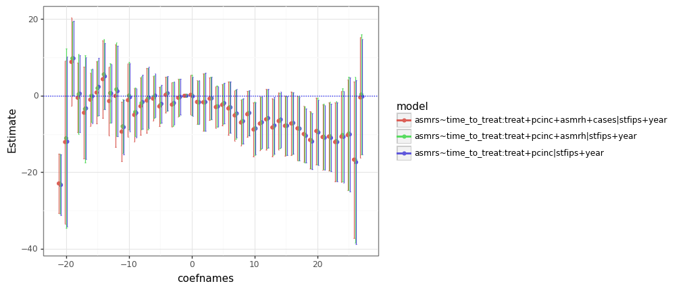

Getting Started with PyFixest
In a first step, we load the module and some example data:
from pyfixest import Fixest
from pyfixest.utils import get_data
data = get_data()
data.head()
# >>> data.head()
# Y X1 X2 X3 X4 group_id Y2
# 0 37.167541 0.471435 14 20 829 2 36.343535
# 1 -20.290945 -0.720589 36 33 59 6 -21.650227
# 2 23.738056 0.015696 6 13 516 19 23.482428
# 3 19.980327 0.953324 11 91 759 13 19.372943
# 4 -1.482348 0.405453 11 84 325 19 -2.510737
We then initiate an object of type Fixest.
fixest = Fixest(data = data)
#<pyfixest.fixest.Fixest object at 0x00000216D5873070>
For this object, we can now estimate a fixed effects regression via the .feols() method. .feols() has two arguments: a two-sided model formula, and the type of inference.
fixest.feols("Y~X1 | X2", vcov = "HC1")
The first part of the formula contains the dependent variable and "regular" covariates, while the second part contains fixed effects.
Estimation results can be accessed via a .summary() or .tidy() method:
fixest.summary()
# >>> fixest.summary()
#
# ### Fixed-effects: X2
# Dep. var.: Y
#
# Estimate Std. Error t value Pr(>|t|)
# X1 -0.103285 0.172956 -0.597172 0.550393
Supported covariance types are "iid", "HC1-3", CRV1 and CRV3 (one-way clustering). Inference can be adjusted "on-the-fly" via the
.vcov() method:
fixest.vcov({'CRV1':'group_id'}).summary()
# >>> fixest.vcov({'CRV1':'group_id'}).summary()
#
# ### Fixed-effects: X2
# Dep. var.: Y
#
# Estimate Std. Error t value Pr(>|t|)
# X1 -0.103285 0.157756 -0.654713 0.512653
# ---
It is also possible to run a wild (cluster) bootstrap after estimation (via the wildboottest module):
fixest = Fixest(data = data)
fixest.feols("Y~ csw(X1, X2, X3)", vcov = {"CRV1":"group_id"})
fixest.wildboottest(param = "X1", B = 999)
# param t value Pr(>|t|)
# fml
# Y ~ X1 X1 -0.710781 0.489489
# Y ~ X1+X2 X1 -0.726028 0.493493
# Y ~ X1+X2+X3 X1 -0.548795 0.596597
Note that the wild bootstrap currently does not support fixed effects in the regression model. Supporting fixed effects is work in progress.
PyFixest supports a range of multiple estimation functionality: sw, sw0, csw, csw0, and multiple dependent variables. Note that every new call of .feols() attaches new regression results the Fixest object.
fixest.feols("Y~X1 | csw0(X3, X4)", vcov = "HC1").summary()
# >>> fixest.feols("Y~X1 | csw0(X3, X4)", vcov = "HC1").summary()
#
# ### Fixed-effects: X2
# Dep. var.: Y
#
# Estimate Std. Error t value Pr(>|t|)
# X1 -0.103285 0.157756 -0.654713 0.512653
# ---
#
# ### Fixed-effects: 0
# Dep. var.: Y
#
# Estimate Std. Error t value Pr(>|t|)
# Intercept 7.386158 0.187825 39.324716 0.000000
# X1 -0.163744 0.186494 -0.878008 0.379939
# ---
#
# ### Fixed-effects: X3
# Dep. var.: Y
#
# Estimate Std. Error t value Pr(>|t|)
# X1 -0.117885 0.178649 -0.659867 0.509339
# ---
#
# ### Fixed-effects: X3+X4
# Dep. var.: Y
#
# Estimate Std. Error t value Pr(>|t|)
# X1 -0.063646 0.074751 -0.851439 0.394525
# ---
TWFE Event Study
Here, we follow an example from the LOST library of statistical techniques.
import pandas as pd
import numpy as np
from pyfixest import Fixest
# Read in data
df = pd.read_csv("https://raw.githubusercontent.com/LOST-STATS/LOST-STATS.github.io/master/Model_Estimation/Data/Event_Study_DiD/bacon_example.csv")
df['time_to_treat'] = (df['year'] - df['_nfd'] ).fillna(0).astype(int)
df['time_to_treat'] = pd.Categorical(df.time_to_treat, np.sort(df.time_to_treat.unique()))
df['treat'] = np.where(pd.isna(df['_nfd']), 0, 1)
fixest = Fixest(df)
fml = 'asmrs ~ i(time_to_treat, treat, ref = -1) + csw(pcinc, asmrh, cases) | stfips + year'
fixest.feols(fml, vcov = {'CRV1':'stfips'})
fixest.iplot()
